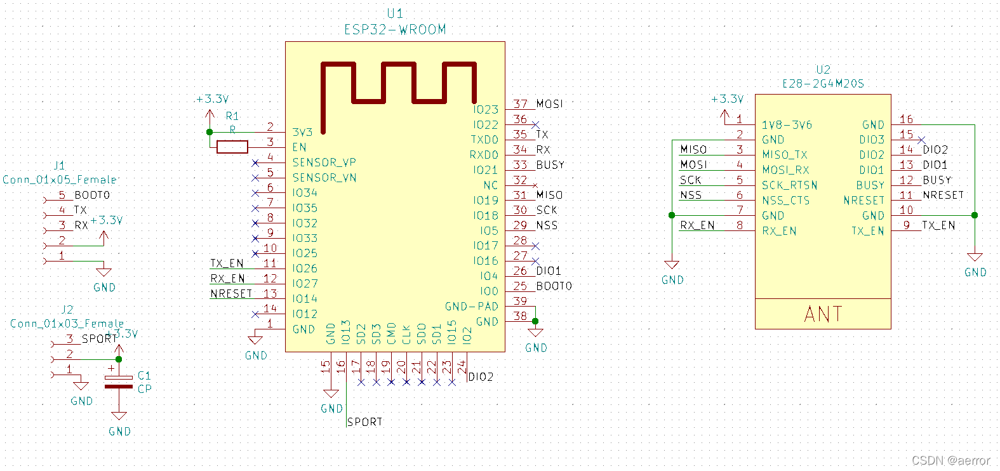
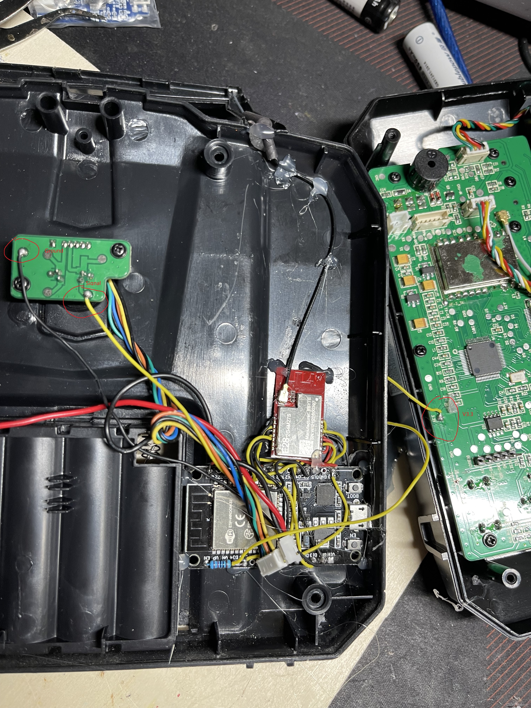
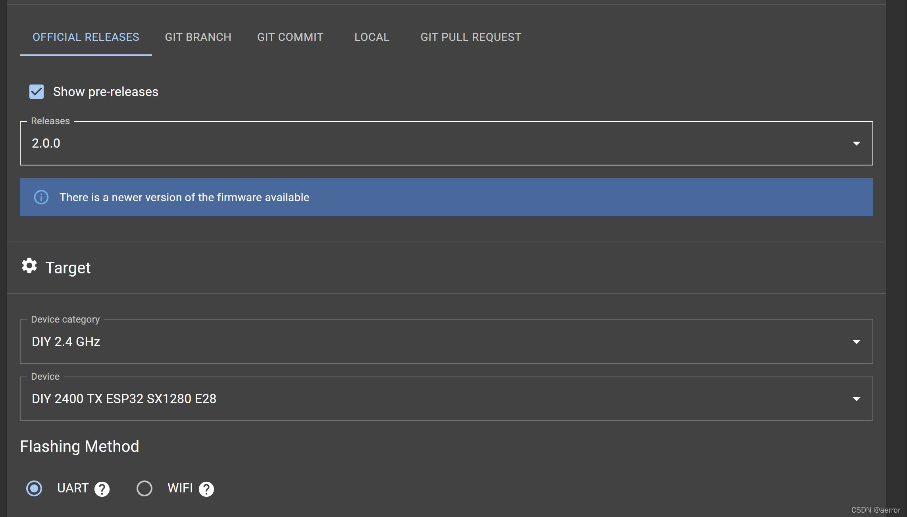
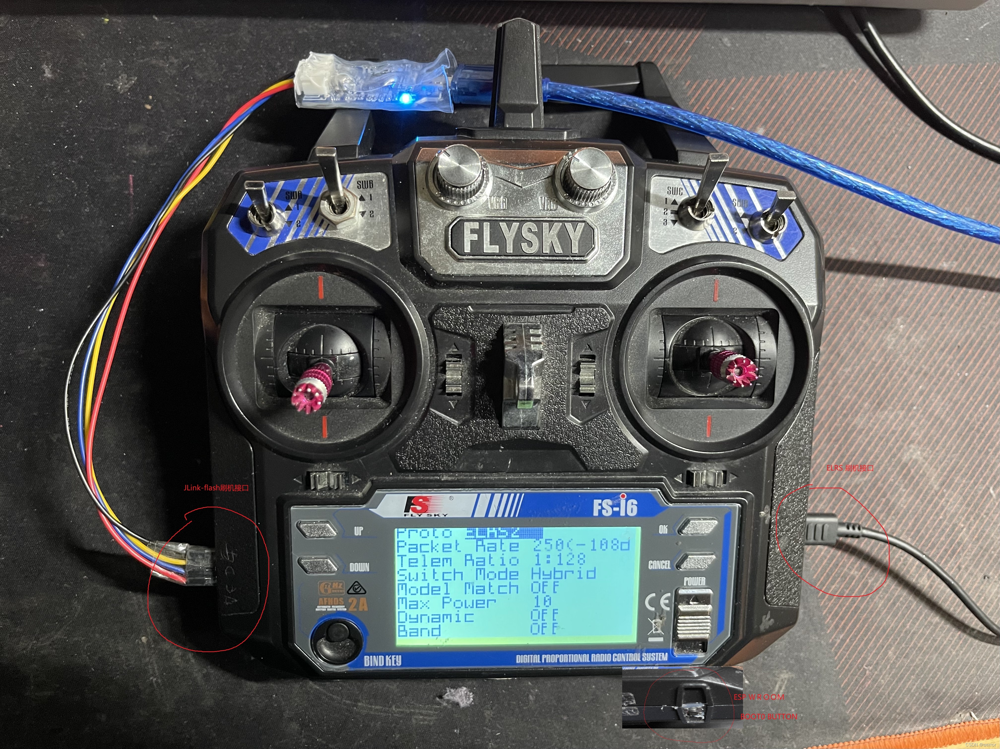

制作难度：容易
一。硬件材料：
1.LoRa射频模块，sx1280 ： E28-2G4M27S
2.MCU Wifi模块：ESP-WROOM32
3.各色硅胶软线若干
4.1k电阻
5.富斯FS I6摇控器
6.JLink一个，刷写固件用
7. 2.4G天线一个
软件：
1. EpressLRS Configurator https://github.com/ExpressLRS/ExpressLRS-Configurator
2.我写的的FS i6固件, ERFLY6, GitHub - aerror2/erfly6: ER9X for I6 and I6X of Flysky
3. JLink-FLash, J-Link Flash Download
二。TX电路图：

三。TX和遥控器接线：
做好的TX，只需要接3条线到遥控器，一条信号线（SPORT)，一个取电3.3V， 一条地线，如下图

五。制作步骤：
1. 按"二。TX电路图" 把E28-2G4M27S和ESP-WROOM32用导线连接起来。
2. 按”三。TX和遥控器接线“把三根线接起来，使用热熔胶固定在底板。
3. ESP-WROOM32使用usb线连接到电脑，使用 EpressLRS Configurator刷入ELRS 2.0的固件,硬件选：DIY 2400 ESP32- E28, 然后填你的绑定密码，然后点Build & FLASH, 看Log，到刷固件的时候，你需要按住ESP-WROOM32开发板上的Boot0键，要不然会失败。

4.按这个 erfly6/ER9XFlySky I6En.pdf at main · aerror2/erfly6 · GitHub PDF说的刷FSi6的固件，固件在https://github.com/aerror2/erfly6/blob/main/Output/Release/Exe/FSI6.hex
5.完成开机图

还有一些问题，如散热问题，电池容量问题，切换的高频头的问题还没有处理。
请自行承担风险改装，祝好运